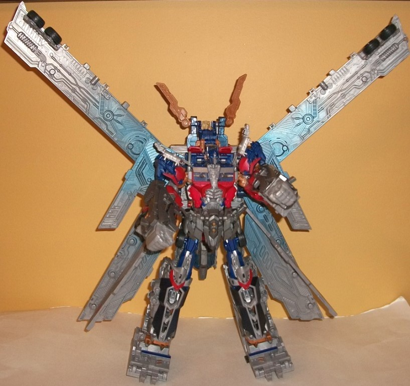

Allegiance
: Autobot
Size
: Ultimate ($80 U.S.)
Difficulty of Transformation from Vehicle
to Robot
: Medium
Difficulty of Transformation from Robot
to Super Robot
: Hard
Color Scheme
: Light milky gray,
dark blue, light red, milky metallic gray, and some dark metallic blue,
transparent blue, clear plastic, silver, light electric blue, light brownish
tan, pale light yellow, and metallic copper
Rating
: 7.5
This version of movieverse
Optimus Prime includes-- at long last-- a trailer, which is heavily inspired
by his
G1 toy's trailer
in terms of its mold
detailing in trailer mode. There's tons of long lines and "rivets" molded
all along the trailer, along with what look like heavy-duty locks on the
back end of it as well as taillights. Unfortunately, the trailer is nearly
bereft of paint apps to highlight all this mold detailing-- I wasn't expecting
a HUGE amount, since it IS pretty much a gray box, but having that G1-esque
angular stripe along the sides painted really would've helped, even if
it would not have been entirely movie-accurate. His Autobot symbols on
the trailer are also simply painted with one blob of red or silver paint,
as opposed to the paint being applied to only the "Autobot symbol" parts.
Beyond a few copper and dark blue paint apps on the bottom end of the rear
part, the back end is also paint-free, and it REALLY needed it. At least
the front end of the trailer is colored mostly in a nice dark blue shade.
The trailer has some rather noticeable extras in vehicle mode-- namely
part of the super robot arms and Prime's large combined mode gun just hanging
out underneath, very much below where the bottom of the trailer SHOULD
end, resulting in some unsightly undercarriage junk here that just barely
has clearance from the ground. Granted, you can just take off the gun part
to remove a lot of this junk, but then what are you going to do with THAT
huge weapon in THIS mode? Optimus Prime's "core robot" cab portion is pretty
by-the-book for a mainline movieverse Prime toy, with the mold detailing,
distribution of dark blue/gray/red/silver, and his flame paint apps pretty
much all where you'd expect them. It's SLIGHTLY longer proportionally than
most of the other movieverse Prime toys, but this is likely so that you
can turn the cab in respect to the trailer a bit and still have it attached.
(Speaking of which, the cab is attached to the trailer via a deep peg--
unfortunately, it's not very tight, so if you pick up either the trailer
or the cab, the connection will almost certainly become undone.) Two other
minor surprises with Prime's vehicle mode are that his cab windshield is
painted as one long window, instead of being separated in the middle, which
is definitely not movie-accurate, though not a big deal, either. Also,
there's a bit of light brownish tan plastic on the toy (more visible in
robot mode), which isn't movie-accurate but goes pretty well with the other
colors, in my opinion. As far as extras for the cab, there's a bit of an
obvious gap in the middle of the back end, but thankfully this is mostly
obscured when the trailer is attached.
Although Prime's individual
robot mode is about halfway between a "voyager class" toy and a "leader
class" toy, his transformation isn't overly complicated-- in the interest
of streamlining what was in some previous toys a laborious transformation,
some simplifications were made outside of the "usual" transformation--
the big changes being that his arms are now formed out of the halves of
his truck nose while his legs form the back part of the cab in an opposite
direction than they usually do. Also, his entire waist and stomach piece
is "fake", with only the windows being carried over from his actual truck
mode. Everything else is stored behind his back, but the backpack is surprisingly
compact for the amount of stuff that it carried and everything has a peg
to keep it in place. (That said, I wish the transparent part of the truck
window that sticks out above and behind his head had a less conspicuous
place to store.) Parts of his windows also form "shoulder armor", which
is a bit larger than it should be proportionally but otherwise I don't
mind it, as it gives Prime a more unique silouhette. Having the halves
of his truck nose hanging off of his arms is also a bit disconcerting and
definitely not movie-accurate, and they're definitely too bulky. That said,
his legs look pretty nice (even if they're a bit short proportionally,
at least for the leggy Movie Prime design). His feet also have almost no
heels, so he isn't the most stable of the movie Prime toys, though he can
certainly still hold a pose without too much effort. The mold detailing
remains exquisite on Prime's robot parts, with stuff like pistons, engine
parts, and the like sculpted all over the place-- particularly on his waist
and legs. The headsculpt is also spot-on, and Optimus Prime definitely
doesn't have a problem with paint apps in this mode-- any particularly
important detail is painted, from the silver bits in the middle of his
legs to his waist to his face having both a silver faceplate, bronze "circles"
near the sides of said faceplate, and light blue eyes. In this mode, Optimus
Prime has plenty of articulation; he can move at the neck, shoulders (at
two points), elbows (at two points), hips (at three points), knees, and
a bit at the ankles. So, minus the waist, he's got you pretty well covered
here. (Unfortunately, his trailer does NOT have a base mode, unlike most
other Optimus toys that come with trailers-- a bit of an oversight in my
book, given how expensive and large this figure is. He also doesn't come
with any weapons for his individual robot mode.)

The combination
of Optimus Prime's "core" robot with his trailer can be a bit "greebly",
with the arm and waist pieces in particular taking a bit of finangling
to get just right so that every thing clips together (the transformation
of the extra parts back into trailer mode can also be a bit touchy in those
same places), but when you get everything right, the result is REMARKABLY
solid. You don't need to worry about Optimus disconnecting from his trailer
accidentally or anything. In his "combined" mode, Optimus roughly doubles
in height, though the most impressive parts of this mode are the HUGE wings
splayed everywhere that are formed from fragments of his trailer sides.
Using those parts for wings was a pretty ingenious move, and his wingspan
is pretty impressive-- well over a foot. The detailing on the super robot
parts remains exquisite, with little vents and the like everywhere to make
it look like the armor has "cocooned" around his core robot bits. His legs
look big and powerful without it being TOO obvious where his "regular"
robot legs are, and his combined mode arms fit up and over his regular
arms, plugging in at the fists. This is a pretty awesome idea, allowing
the arms to retain roughly the same articulation that they had in Prime's
regular mode, as the other arm cover pieces merely "hover" a little over
his regular arms. That said, this mode isn't flawless, not by a long shot.
The articulation is the big stickler-- beyond his arms, which are pretty
well-articulated, his legs can move side-to-side at the hips and his many
wings can move up and down, but that's it. Prime, for the most part, is
stuck in one pose in this mode, which is a HUGE downside for a $80 toy.
Another downside is that Optimus' head really looks pinhead-ish in this
mode, though this can be rectified by rotating the large electronic cannon
from his back over his head and out front for his hands to hold, with a
larger helmet "overlaying" his regular head and having a nifty "targeting
reticle" painted on it, to boot. Speaking of Optimus Prime's huge Mechtech
weapon, pressing back on the red lever near the front causes the front
part to split open while three different areas on the gun blink red and
an "energy beam firing/recharging" sound is continuously emitted until
you let go of the red lever, and then the pieces revert back to their original
position. Also, there are two small inconspicous gray buttons a little
in front of where the gun connects to Prime's helmet. Pressing down on
the right button causes the side two transparent bits to blink red while
a "rapid firing" sound is made until you let go of the button, and pressing
down on the left button causes the main cannon to blink red while a different
kind of "rapid firing/reloading" sound is emitted once. The large Mechtech
weapon also has holders for two other Mechtech weapons, on different sides
of the top. The mold detailing on this piece is also pretty exquisite,
with turbines and little mechanical bits everywhere. That said, the paint
detailing specifically for Optimus Prime's super robot mode parts is a
tad sparse-- the legs are painted up pretty good with some dark blue and
red, as are the red pieces that connect to the sides of his stomach and
his red/blue shoulders, but his huge gun pretty much has no paint on it
beyond the silver Autobot symbol, and his waist and lower arms also are
pretty much bereft of paint. I do like the metallic blue "spray fade" paint
apps on his wings, though, which almost make it look like he's glowing
a bit with power.
This "Ultimate" version
of Optimus Prime has a pretty excellent vehicle mode, and I love that there's
finally a movie Prime that comes with a trailer and can combine with it
to boot. That said, though Optimus' individual robot mode is decent (though
certainly not perfect because of how his arms are formed), his combined
mode is a bit of a disappointment. It may LOOK impressive, and his gun
is pretty massive, but it can barely move at all, and Optimus is more or
less stuck in one position in this mode, with his arms being the only parts
that have a decent range of articulation here. I also wish he had a lot
less of that blah milky gray plastic. For people who want a big, combining
movieverse Prime, this is your toy-- but if money is an object and/or if
you're an articulation stickler, look elsewhere.
(NOTE: Beyond the mass release, there was also an unchanged release of this mold as a San Diego 2011 Comic-Con Exclusive, where it was packaged in a slipcase "long box" as opposed to the more massive mass-release box which had him in robot mode.)
Review by Beastbot